Добавляем сканнеры:
include:
- template: Jobs/SAST.gitlab-ci.yml
- template: Jobs/Dependency-Scanning.gitlab-ci.yml
- template: Jobs/Secret-Detection.gitlab-ci.yml
- template: Jobs/Container-Scanning.gitlab-ci.yml
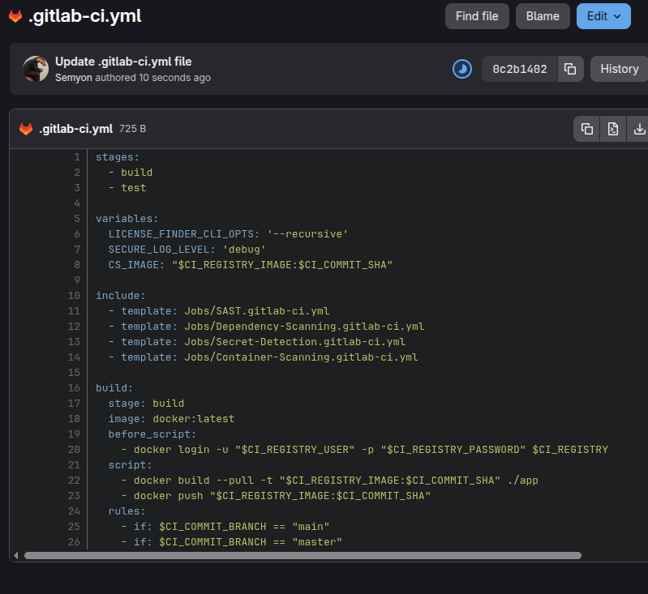
Результаты пайплайна
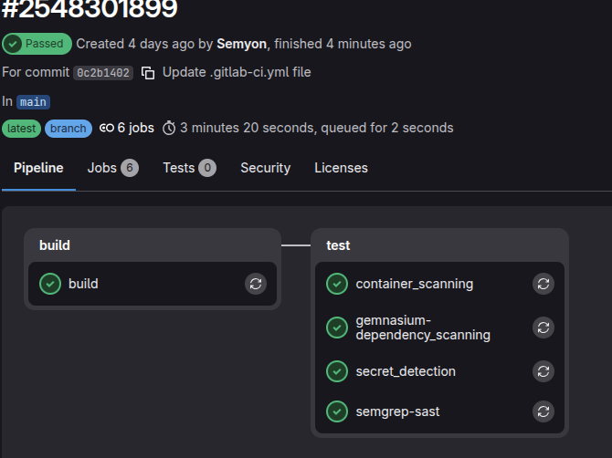
Инструмент SAST подключен через официальный шаблон Jobs/SAST.gitlab-ci.yml. Анализ исходного кода выполнялся в автоматическом режиме с помощью сканера Semgrep.
По результатам gl-sast-report.json, в исходном коде веб-приложения обнаружены 3 уязвимости уровня Critical.
app/server.js, строка 24app/server.js, строка 54app/server.js, строка 81В файле server.js на указанных строках обнаружена прямая конкатенация (склейка) строк при формировании сырых SQL-запросов к базе данных без предварительной валидации или экранирования:
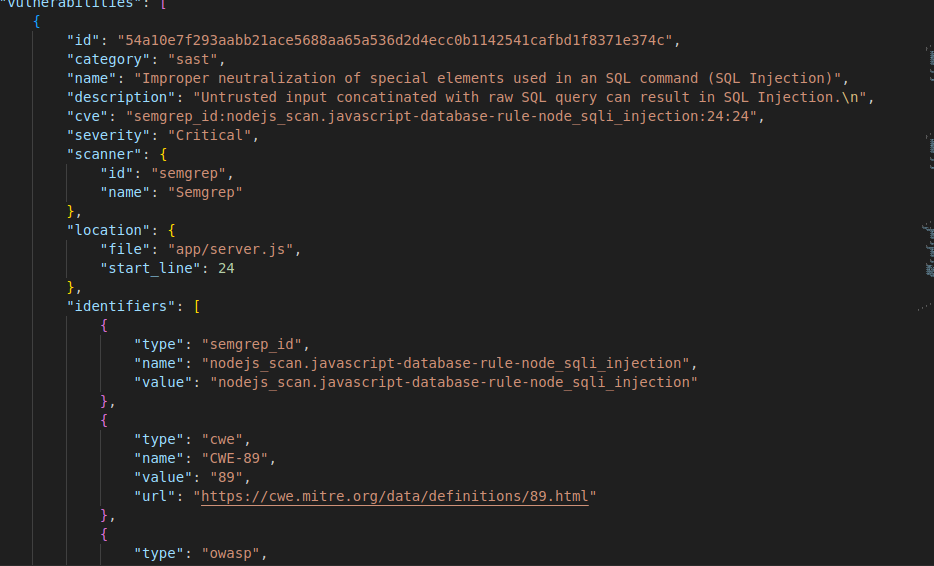
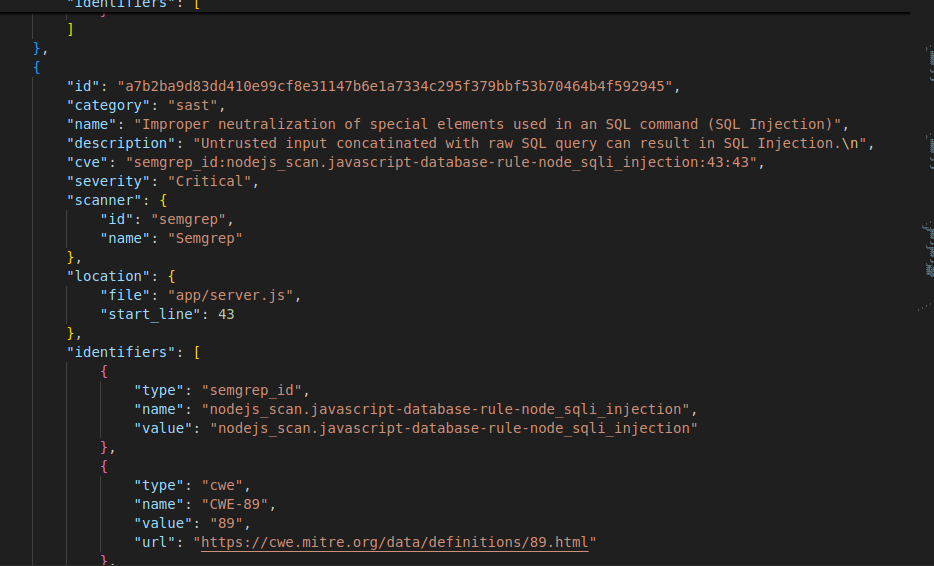
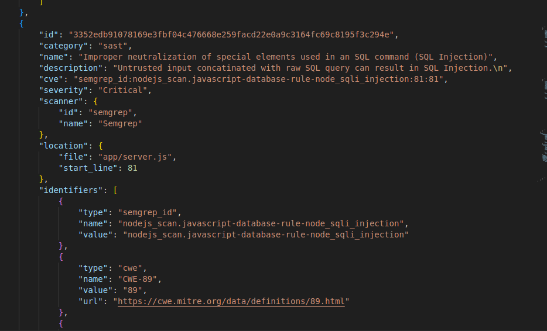
Места с возможной инъекцией
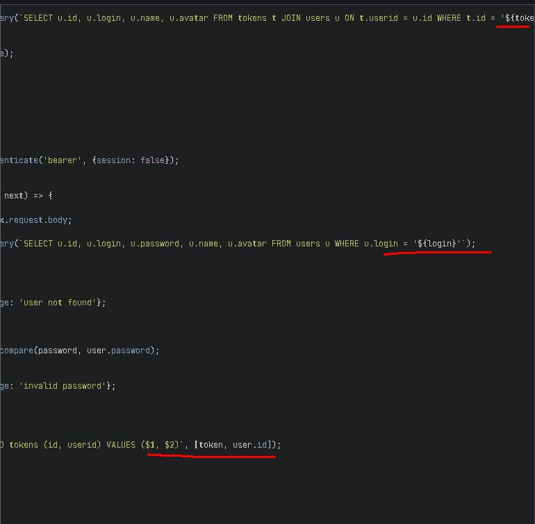
1 unknown (неизвестно / не определено в манифесте репозитория apt пакетов). 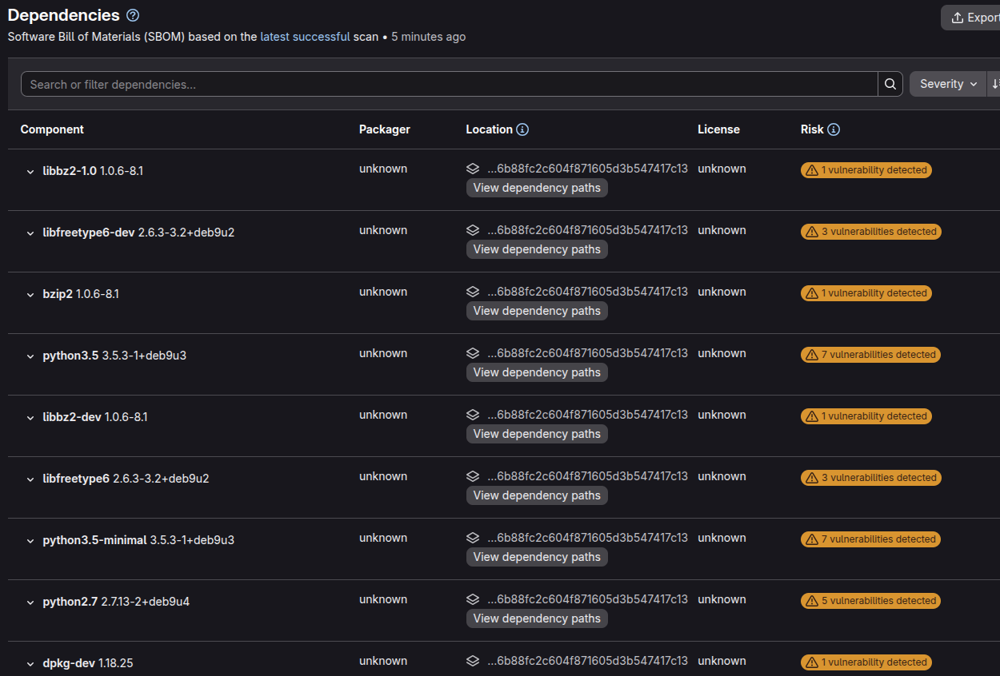
Всего зависимостей: 412 пакетов.
Компоненты с уязвимостями: 212 пакетов из 412
Общее число зафиксированных уязвимостей в системе: 1459 проблем безопасности.
Наиболее критичные и уязвимые системные компоненты:
binutils (версия 2.28-5) — содержит 93 уязвимости (включая критические переполнения буфера и DoS-атаки).Выгруженный список зависимостей подтверждает критическое состояние безопасности инфраструктурного слоя приложения. Наличие 1459 уязвимостей обусловлено тем, что базовый Docker-образ использует неподдерживаемый дистрибутив ОС (Debian 9).
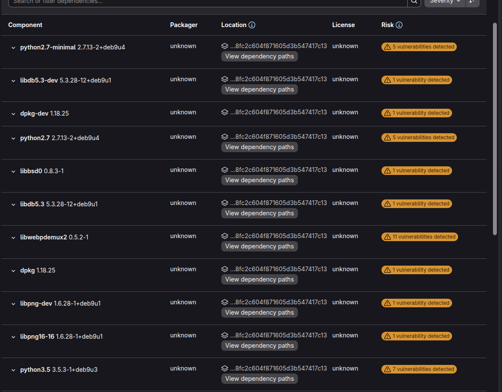
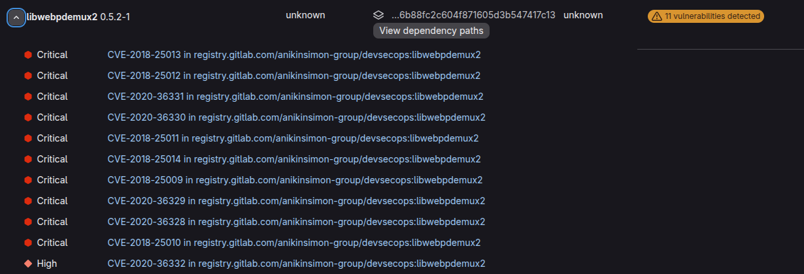
Инструмент анализа: Trivy
Анализ системных слоев выявил критические архитектурные недостатки, связанные с использованием устаревшей базовой ОC. Это привело к наличию большого количества известных незакрытых CVE.
Наиболее значимые примеры зафиксированных уязвимостей уровня (High):
binutils (версия 2.28-5): *Идентификатор: CVE-2017-12448zlib1g-dev (версия 1:1.2.8.dfsg-5): *Идентификатор: CVE-2018-25032Большинство найденных уязвимостей в отчете помечены статусом "vendor_status": "fixed". Это указывает на то, что патчи безопасности для данных пакетов существуют, но они выпущены для более свежих веток дистрибутива Debian (10/11/12) и не могут быть автоматически установлены в репозиториях Debian 9.
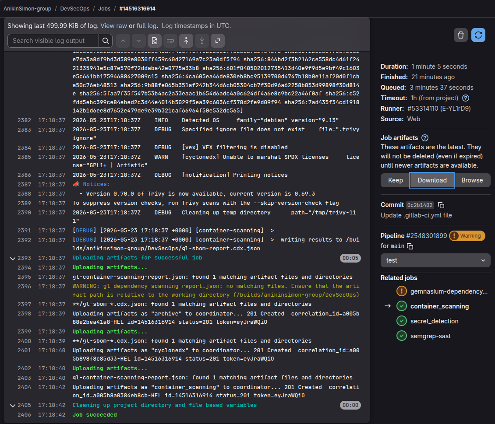
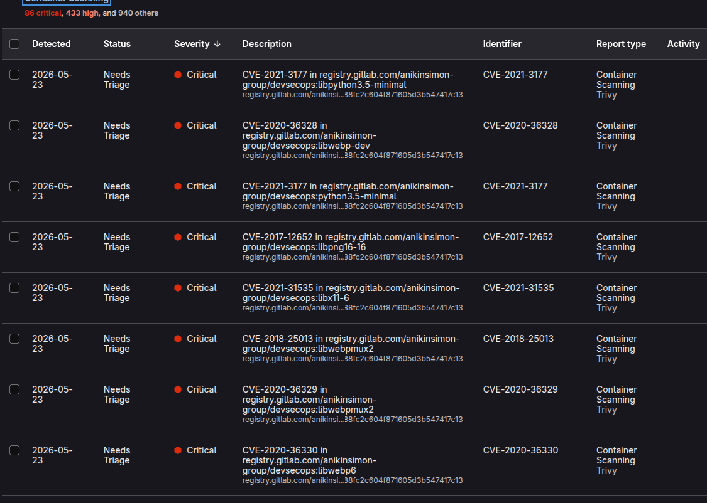
Инструмент: (Jobs/Secret-Detection.gitlab-ci.yml).
Результат: Этап пройден безошибочно. Актуальных утечек приватных ключей, паролей или токенов в истории коммитов репозитория не обнаружено ("vulnerabilities": []).
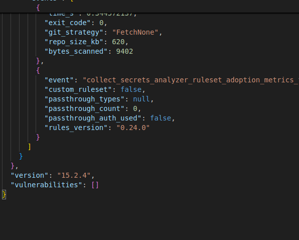
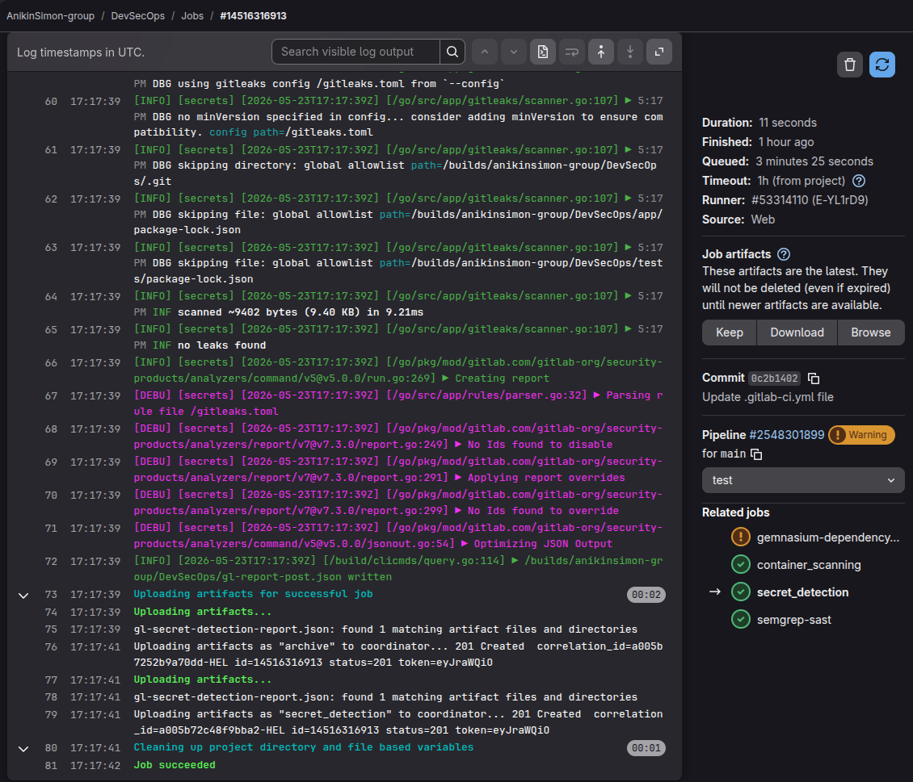